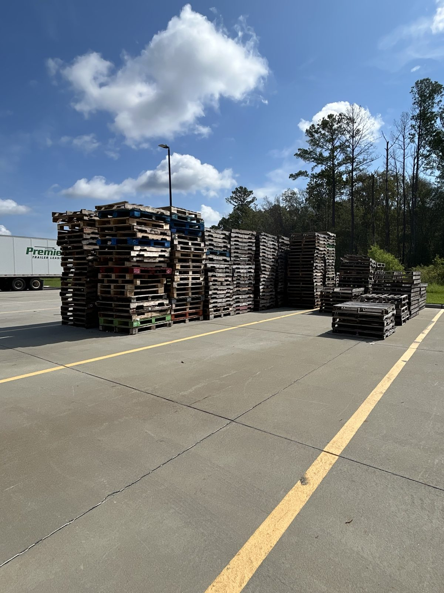

Walk through most distribution yards in the Charlotte area and you will see exactly what the photo above shows: mixed stacks of pallets in various sizes, conditions, and materials, often without any clear system for what is what. For warehouse operators, that variety is not just an organizational headache. It has real implications for forklift selection, rack compatibility, load capacity, and operational efficiency.

Mixed pallet inventory in a Carolina distribution yard. The variety of sizes, conditions, and materials visible in a single yard reflects the range of pallet standards that warehouse operations encounter daily.
This guide covers the most common pallet types by material, the standard sizes used in North American and international supply chains, and what those differences mean for your material handling equipment and facility design.
Why Pallet Standardization Matters
Pallets are so fundamental to warehouse operations that it is easy to treat them as interchangeable. They are not. A pallet that does not match your rack beam spacing creates a drop-through hazard. A pallet with a different footprint than your forklift is calibrated for changes the effective load center calculation. A heavier pallet material affects the net load capacity on every lift. And in temperature-controlled or food-grade environments, the wrong pallet material can create compliance issues regardless of what is sitting on top of it.
Understanding what types of pallets move through your facility and what each one requires from your equipment and infrastructure is not an academic exercise. It is operational fundamentals.
Pallet Sizes: The Standards That Drive Everything
Pallet size affects rack design, truck loading efficiency, storage density, and forklift fork length requirements. The dimensions your facility is designed around determine which pallets work and which create problems.
| Pallet Size | Dimensions | Common Application | Market |
|---|---|---|---|
| GMA Standard | 48" x 40" | Grocery, general consumer goods, most US distribution | North America (dominant) |
| Euro Pallet (EPAL) | 47.2" x 31.5" | European import/export, pharmaceutical, automotive | Europe, international trade |
| 48" x 48" | 48" x 48" | Drums, paint, bulk chemical | North America (specialty) |
| 42" x 42" | 42" x 42" | Telecommunications, beverage | North America (specialty) |
| 48" x 45" | 48" x 45" | Automotive parts | North America (specialty) |
| 40" x 40" | 40" x 40" | Dairy products | North America (specialty) |
The GMA 48x40 pallet is the default assumption for most North American warehouse infrastructure. If your facility was designed for standard operations and you are suddenly receiving Euro pallets or specialty sizes from a new supplier, the mismatch creates issues at the rack level, the dock level, and the truck loading level that are worth addressing before they become safety problems.
How Size Affects Your Forklift
Standard forklift forks are 42 to 48 inches long, designed to penetrate a 48-inch deep pallet with adequate support. Running a shorter pallet on standard forks shifts the load center outward, which reduces effective lift capacity. Running an oversized pallet that extends beyond the fork tips creates an even larger load center shift. Neither situation is catastrophic on a single lift, but both affect the safe working capacity of the machine and both are situations operators need to recognize and account for.
Fork width also interacts with pallet size. Most sit-down counterbalance forklifts run forks at approximately 16 to 18 inches wide when centered, which works cleanly with GMA 48x40 pallets. Non-standard pallets with unusual entry pocket dimensions or partial four-way entry can restrict which forklifts can engage them cleanly.
Pallet Types by Material
The material a pallet is made from determines its weight, load capacity, durability, regulatory compliance in certain environments, and cost. Each material has applications where it performs best and environments where it is the wrong choice.
The most common pallet type in the US market by a significant margin. Wood pallets are inexpensive, repairable, and widely available. They vary considerably in quality and condition. A new heat-treated hardwood pallet performs very differently from a heavily used mixed-wood pallet that has been cycled through multiple supply chains. Dynamic load capacity on a quality wood pallet typically runs 2,500 to 3,000 pounds. Static capacity is higher. Wood pallets are subject to ISPM 15 heat treatment requirements for international shipment to prevent pest transfer.
Plastic pallets are more expensive upfront but offer significant advantages in certain applications. They are impervious to moisture, do not harbor insects or bacteria, and are ISPM 15 exempt for international shipping. Food-grade, pharmaceutical, and cleanroom operations often require plastic pallets for these reasons. Plastic pallets are also significantly more consistent in dimension and condition than wood, which matters for automated handling systems. They are not repairable when cracked or broken and must be replaced entirely.
Composite pallets are made from compressed wood fiber or recycled materials. They offer a middle ground between wood and plastic in terms of cost and durability. Presswood pallets are fully ISPM 15 compliant by nature of the manufacturing process. They are lighter than solid wood pallets and more dimensionally consistent, which helps with automated handling. Load capacity is generally lower than solid wood, making them better suited for lighter consumer goods applications.
Steel and aluminum pallets are used in heavy industrial applications, military logistics, and high-value asset transport where durability and security are priorities over cost. Metal pallets have load capacities that far exceed wood or plastic alternatives and essentially unlimited service life under normal conditions. The weight of metal pallets is the primary operational consideration. A steel pallet can add 50 to 100 pounds to a load, which factors into total weight calculations and forklift capacity requirements.
Two-Way vs Four-Way Entry
Beyond size and material, pallet entry configuration determines which equipment can handle a pallet and from which direction. This is a practical consideration that affects productivity on the warehouse floor.
Two-Way Entry
Forks can only enter from two sides: the front and back of the pallet. The solid block legs or stringers on the other two sides block fork entry. Two-way pallets work fine for situations where the approach direction is always the same, but they limit flexibility in tight spaces or when pallet orientation changes through the supply chain.
Four-Way Entry
Forks can enter from all four sides. This is the configuration of the standard GMA stringer pallet with notched stringers, and it is what most warehouse operations in North America are designed around. Four-way entry gives operators more flexibility in approach direction and is particularly valuable in tight rack configurations where approach angles vary.
Block Pallets
Block pallets use corner blocks and center blocks rather than stringers, which creates true four-way entry with full fork support from any direction. Euro pallets are block pallets. Block pallets are generally stronger and more stable than stringer pallets and are common in high-cycle automated handling environments where consistent fork engagement matters.
In mixed receiving environments where pallets arrive from multiple suppliers and supply chains. It is common to see GMA 48x40 wood pallets, Euro pallets, and non-standard specialty sizes all moving through the same facility in the same day. Operators who understand the differences can adapt handling approach, fork engagement, and load center awareness in real time. Operators who treat all pallets as identical are the ones who create incidents when a non-standard pallet behaves unexpectedly.
Pallet Condition and What It Means for Safe Handling
A pallet that meets the right size and material specification for your operation can still create a hazard if it is in poor condition. Broken deck boards, missing blocks, cracked stringers, and protruding fasteners all reduce the effective load capacity and stability of a pallet load. In a busy receiving environment where pallets arrive from various sources, condition assessment is a real operational discipline, not a formality.
The practical standard most operations apply is straightforward: if a pallet has a broken deck board in the load-bearing zone, a missing stringer or block that reduces stability, or visible damage that would allow forks to punch through or loads to shift, it should be pulled from circulation. The cost of a damaged pallet is a few dollars. The cost of a load dropped from height or a rack collapse is significantly higher.
Choosing the Right Forklift for Your Pallet Mix
If your operation handles a consistent pallet type in a controlled environment, forklift selection is straightforward. If you handle mixed pallet sizes or materials from multiple sources, forklift selection needs to account for the full range of what your equipment will encounter.
Key considerations when matching forklifts to pallet specifications include fork length relative to pallet depth, fork spread adjustability for non-standard widths, ground clearance relative to pallet entry height, and load capacity at the effective load center for your heaviest pallets. For operations receiving Euro pallets regularly alongside standard GMA pallets, adjustable fork positioning and awareness of the load center difference between the two sizes is particularly important.
If you are sourcing or evaluating forklifts for a Charlotte area facility that handles non-standard pallet types, mentioning that to your equipment provider upfront ensures the machine you end up with is spec'd correctly for what you are actually handling, not just what the standard data sheet assumes.
Charlotte Lift Trucks is an independent forklift matching service connecting businesses across the Charlotte metro with independent local equipment providers. Need help finding the right forklift for your facility and pallet mix? Request a free consultation →